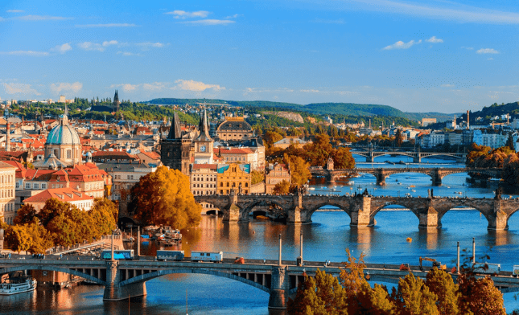

The Czech Republic acts as a true friend of Israel, and is one of the countries that shows the strongest support for the State of Israel during the war and in recent years in general. When the war broke out, the Czech Republic sent all of its stock of vests and announced that it would provide Israel with any assistance that would be required. The Prime Minister of the Czech Republic visited Israel, a kind of solidarity visit that testifies to her support for the Jewish state.
The Czech Republic is a magical and diverse country in Central Europe that offers fun experiences for travelers of all ages. Prague, the capital city, is considered one of the most beautiful cities in the world and is the most popular travel destination in the country. Prague has a romantic atmosphere and a spectacular architectural landscape. The city is located on the banks of the Hotaba River and contains a number of impressive sites such as a huge citadel that dominates the city, ancient and picturesque streets, bustling squares, ancient bridges and more. | The Czech Republic offers another wide variety of amazing destinations for the traveler. At their head is Karlovy Vary, a mysterious and pastoral city located at the foot of the Carpathian Mountains.
Back to Homepage